screenshot_0 · full
[2560, 1288] → [2560, 1288] · 保留像素 100.0% · 场景 0
原图与选区

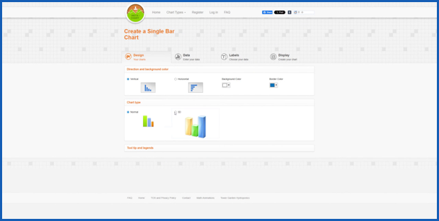
算法输出预览

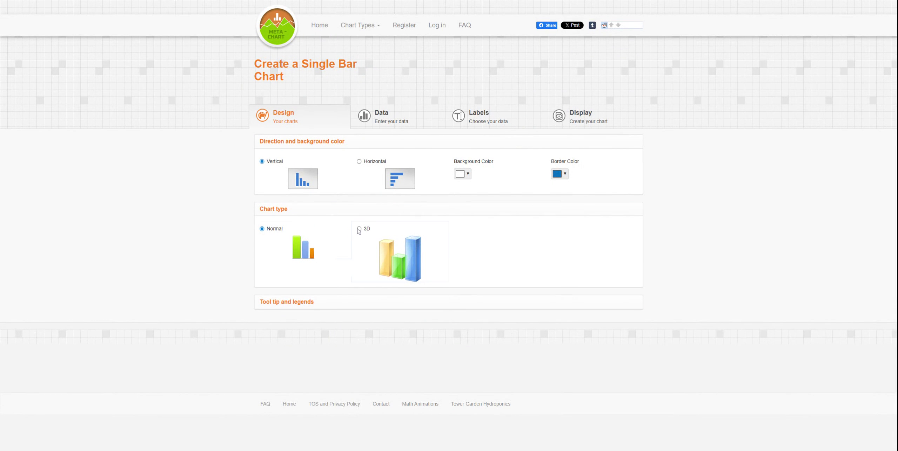
坐标：[0, 0, 2560, 1288] · 原因：first_screenshot
算法版本：experimental_theme_aware_per_step_v2。仅用于预览，生成流程未修改。
返回任务总览 · 查看全部步骤拼图 · 查看算法判断 JSON
左侧为原图预览和选区（绿色：裁剪；蓝色：保留整图），右侧为此算法的输出预览；实验版尚未用于生成。点击图片查看原尺寸；预览自动缩放。像素减少比例不等于 token 减少比例。
[2560, 1288] → [2560, 1288] · 保留像素 100.0% · 场景 0
原图与选区

算法输出预览

坐标：[0, 0, 2560, 1288] · 原因：first_screenshot
[2560, 1288] → [468, 126] · 保留像素 1.8% · 场景 0
原图与选区
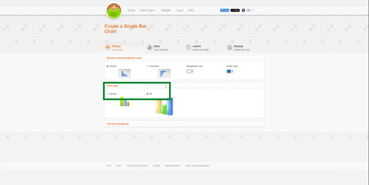
坐标：[716, 570, 1184, 696] · 原因：localized_change
[2560, 1288] → [469, 115] · 保留像素 1.6% · 场景 0
原图与选区
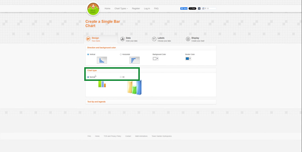
坐标：[715, 570, 1184, 685] · 原因：localized_change
[2560, 1288] → [795, 270] · 保留像素 6.5% · 场景 0
原图与选区
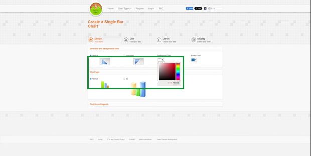
算法输出预览
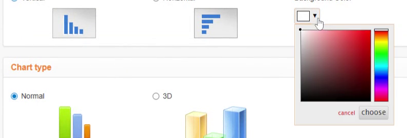
坐标：[719, 465, 1514, 735] · 原因：localized_change
[2560, 1288] → [2535, 650] · 保留像素 50.0% · 场景 0
坐标：[25, 285, 2560, 935] · 原因：localized_change
[2560, 1288] → [1105, 516] · 保留像素 17.3% · 场景 0
算法输出预览
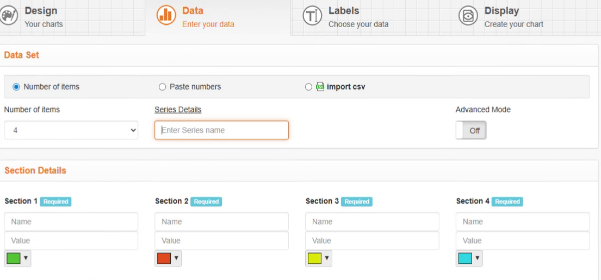
坐标：[733, 302, 1838, 818] · 原因：localized_change
[2560, 1288] → [232, 269] · 保留像素 1.9% · 场景 0
坐标：[938, 509, 1170, 778] · 原因：localized_change
[2560, 1288] → [1125, 322] · 保留像素 11.0% · 场景 0
坐标：[713, 496, 1838, 818] · 原因：localized_change
[2560, 1288] → [268, 101] · 保留像素 0.8% · 场景 0
坐标：[728, 677, 996, 778] · 原因：localized_change
[2560, 1288] → [303, 151] · 保留像素 1.4% · 场景 0
算法输出预览
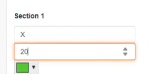
坐标：[712, 640, 1015, 791] · 原因：localized_change
[2560, 1288] → [577, 125] · 保留像素 2.2% · 场景 0
坐标：[713, 666, 1290, 791] · 原因：localized_change
[2560, 1288] → [299, 111] · 保留像素 1.0% · 场景 0
坐标：[990, 667, 1289, 778] · 原因：localized_change
[2560, 1288] → [374, 145] · 保留像素 1.6% · 场景 0
算法输出预览
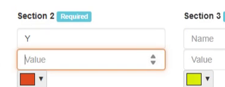
坐标：[989, 646, 1363, 791] · 原因：localized_change
[2560, 1288] → [161, 138] · 保留像素 0.7% · 场景 0
算法输出预览
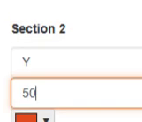
坐标：[1005, 640, 1166, 778] · 原因：localized_change
[2560, 1288] → [579, 145] · 保留像素 2.5% · 场景 0
算法输出预览
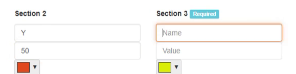
坐标：[989, 646, 1568, 791] · 原因：localized_change
[2560, 1288] → [86, 66] · 保留像素 0.2% · 场景 0
算法输出预览
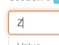
坐标：[1282, 677, 1368, 743] · 原因：localized_change
[2560, 1288] → [303, 126] · 保留像素 1.2% · 场景 0
坐标：[1266, 665, 1569, 791] · 原因：localized_change
[2560, 1288] → [161, 169] · 保留像素 0.8% · 场景 0
原图与选区
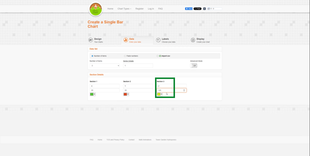
算法输出预览
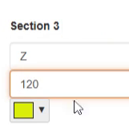
坐标：[1282, 640, 1443, 809] · 原因：localized_change
[2560, 1288] → [2560, 1288] · 保留像素 100.0% · 场景 0
原图与选区
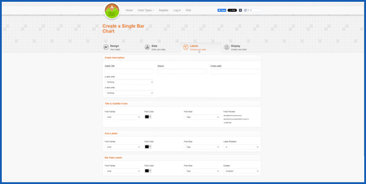
算法输出预览
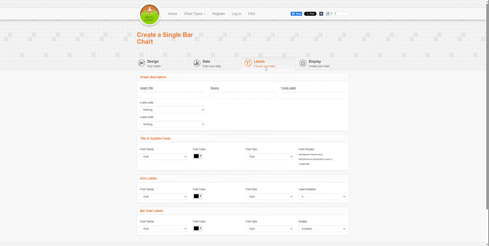
坐标：[0, 0, 2560, 1288] · 原因：changes_spread_keep_full
[2560, 1288] → [2560, 1288] · 保留像素 100.0% · 场景 0
算法输出预览
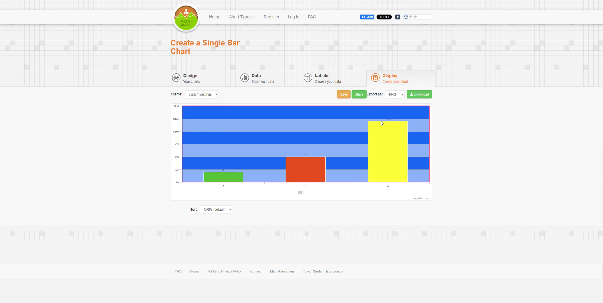
坐标：[0, 0, 2560, 1288] · 原因：changes_spread_keep_full